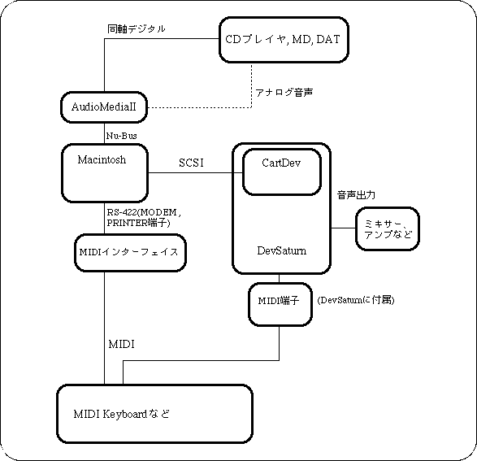

★SGL User's Manual
★開発環境
★SGL User's Manual
★開発環境
カ テ ゴ リ | 備 考 |
|---|---|
| Macintosh | Power Mac,RAM 16BM以上,HDD 500MB以上推奨。 |
| Macintosh用MIDI インタフェース | STUDIO3,MIDItranslator等。 SC-55、SC-88等のMIDI音源にもMIDIインタフェース機能はあります。 |
| MIDIキーボード | データ入力等に使用するため、MIDI機能が豊富なものを推奨。 |
| サンプリングソース | CDプレイヤ、MD、DAT等。 AudioMediaIIボードを使用する場合は、コアキシャル(同軸)デジタルアウトをもつものを推奨。 |
| サンプリングボード または ハードディスクレコーディングシステム | AudioMediaIIを推奨。 MacintoshとSCSI接続可能なサンプラー等も可。 |
| 開発ターゲット | CartDev+DevSaturn |
| その他 | 作曲や確認用にGM対応のMIDI音源があると便利です。 また、複数の音源をモニターするには、MIXER、アンプ、スピーカー等も必要です。 |
下図にセガの推奨するサウンドデザイナー向けハードウェア環境を示します。

| ツール | 製品名 | 備考 |
|---|---|---|
| 波形エディタ | SOUND DESIGNER2 | AudioMediaIIボードに標準でバンドルされています。 |
| WAVEエディタ | 市販ツール | |
| 音色エディタ | TONEエディタ | セガ提供ツール |
| シーケンサ | VISION | Studio VISIONでも可 |
| CUBASE | CUBASE AUDIOでも可 | |
| PERFORMER | DIGITAL PERFORMERでも可 | |
| DSPエフェクト エディットツール | DSP LINKER | セガ提供ツール |
| その他 | Sound Simulator | セガ提供ツール |
★SGL User's Manual
★開発環境